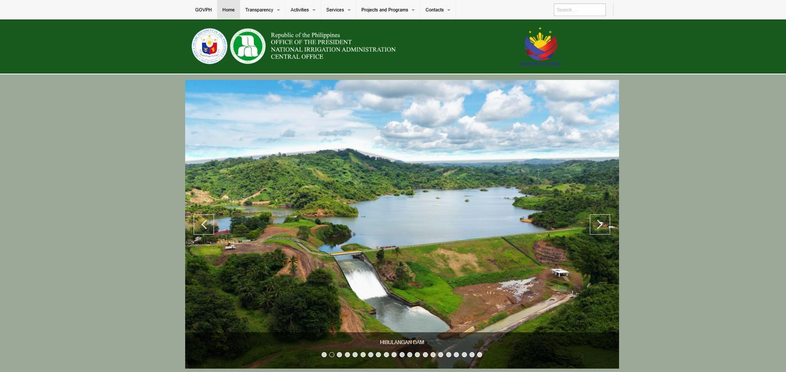

WordPress / Web Developer · WordPress, HTML/CSS
National Irrigation Administration
Worked on migrating the National Irrigation Administration website from Drupal to WordPress, helping recreate and organize pages within the new platform.
What I did
- Assisted in migrating website content from Drupal to WordPress
- Recreated website pages using WordPress and Elementor
- Added and organized website content and images
- Applied HTML/CSS adjustments to match the required layouts
- Helped improve page responsiveness across different screen sizes
- Assisted with website troubleshooting and content revisions
Outcome — A reorganized WordPress website with structured content, updated page layouts, and improved content management capabilities.
Visit nia.gov.ph